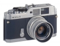

同Bessa-L一样，Bessa-R采用纵走式双层帘幕机械焦平面快门，其中一层是挡光快门，最高快门速度为1/2000s。由于挡光快门的存在，不必要为防止漏光而总要盖上镜头盖。由于是机械快门，所以在没有电池时快门也能正常工作。
银色机身，骚 便宜
便宜 取景器、框线亮 不用电池也能正常工作 最高快门1/2000s
L39镜头全线停产，难买镜头选择少 对焦基线短得可以 外壳容易留痕，后背不耐操（最难忍受） 快门帘子响
看到这台机器的关注度不高，忍不住还是想为他说几句。坦白的说，买bessa R就是为了意淫徕卡，1/10的价钱，几乎一模一样的操控……这台机器用不好，有什么资格提徕卡？
极高的性价比，我的机身是1000块淘回来的。整套机也就3000出头； 操控简单明了，没有一丝多余的东西； 取景器非常明亮，指示清晰； 视差很小，基本可以忽略； 内置测光稳定，只要找对规律，正确曝光并不难； 我用的是福伦达L39 35/2.5镜头，感觉成像很不错了。f2.5，f2.8的确有点肉，但个人认为完全可以接受；
机身质量不算稳定，2年下来修过两次，第一次是过片扳手问题，其中一粒金属小零件的角度太小，定位效果不佳，经师傅改良优化后，问题基本解决。第二次是测光电容的问题，经更换后已无大碍。有人诟病这台机器骨子里就是一台低端的FM10，我认为这正正是他的优点，零件容易找到，而且便宜； 快门声音不及徕卡安静……这是我唯一觉得遗憾的地方； 回片不畅，往往要和那小把手温柔的角力； 机身背部的材质很容易沾污，而且难以清洁，这个要自己想办法解决；
一台不错的工作用机，小巧（看要接上什么镜头，LEICA的M 35/3.5就非常合适，往兜里一放，跟没有似的。
旁轴相机的优点都有了。是成熟设计的机型，ABS的机身比金属机身的谐振点低，所以快门噪音反而比R2要小。 测光准确，拍反转也很有信心，价格很合理
回片器的设计不方便，在R2中被特别说明改进了。用起来比较涩。